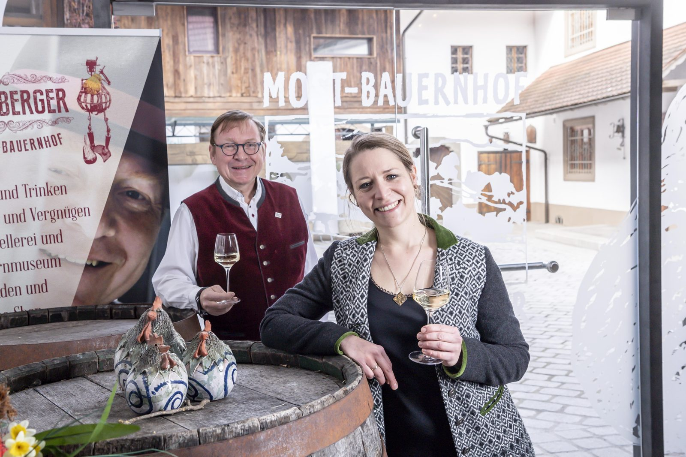
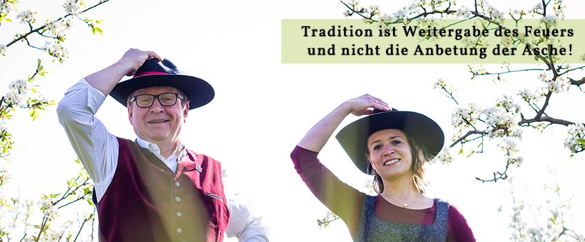
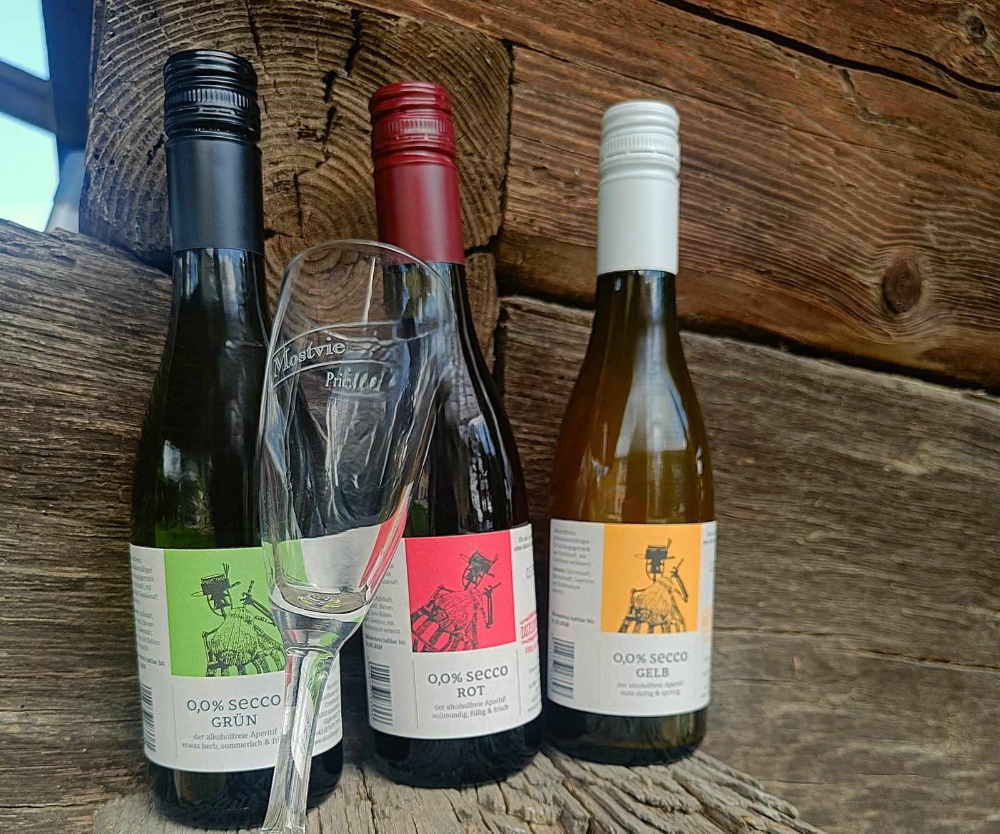
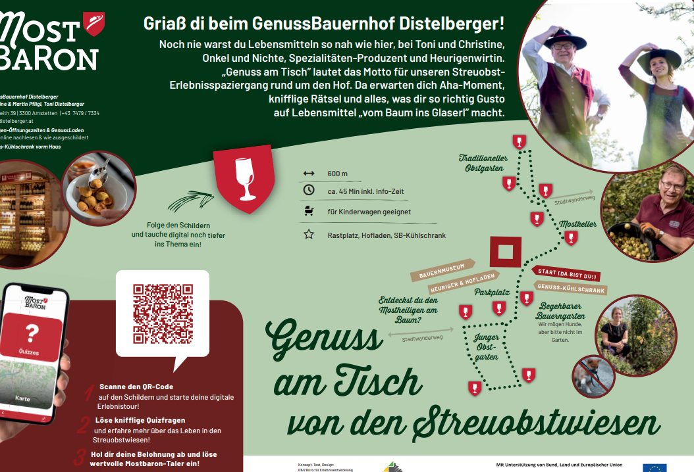

Mostheuriger
Kalte, regionale Spezialitäten aus der Heurigenküche – traditionell, rustikal, neuerdings auch vegan. Dazu 12 sortenreine Moste, 6 Fruchtsäfte, 5 Cider-Sorten und 25 Schnapserl.
Unverbindliche Gestaltungs-Vorschau · keine offizielle Website des GenussBauernhof Distelberger · erstellt von AVOS Solutions
Gigerreith bei Amstetten · Mostviertel
„Tradition ist Weitergabe des Feuers und nicht die Anbetung der Asche!“
Unser 900 Jahre alter Vierkanthof liegt im Herzen des Mostviertler Birnbaumlandes – hier verbinden wir Tradition mit frischen Ideen. Mostheuriger, GenussLaden, Bauernmuseum und Streuobst-Lehrpfad an einem Ort, nur wenige Kilometer von der Westautobahn A1.

Ausg’steckt 2026
10.–11. und 17.–18. Oktober 2026 · 7.–8. und 14.–15. November 2026 – jeweils Freitag, Samstag und Sonntag. Die November-Termine sind unsere Gödnmost-Tage.
Geöffnet ab 16 Uhr, sonntags ab 15 Uhr. Küche bis 20 Uhr, Sperrstunde 22 Uhr. Für Gruppen ab 20 Personen öffnen wir nach Vereinbarung jederzeit.
Vier Gründe, vorbeizuschauen
Kalte, regionale Spezialitäten aus der Heurigenküche – traditionell, rustikal, neuerdings auch vegan. Dazu 12 sortenreine Moste, 6 Fruchtsäfte, 5 Cider-Sorten und 25 Schnapserl.
Most, Fruchtsäfte, Essige, Senf und Chutneys, Fruchtbrände, Sekt, Cider, Marmeladen und Schokoladen – alles aus unseren eigenen Obstgärten.
Die größte volkskundliche Privatsammlung Österreichs mit über 22.000 Exponaten in 15 Räumen – das Lebenswerk von Anton Distelberger sen.
Reisegruppen, Familienfeiern, Firmen-Events: fertige Pakete mit Führung, Verkostung und Jause – ab 20 Personen jederzeit nach Vereinbarung.

Die Familie
Mit viel Herz und Achtsamkeit verarbeiten wir – die Familie Distelberger-Pfligl – regionale Spezialitäten direkt von unseren 5 Hektar Obstwiesen: ein wertvoller Lebensraum voller Vielfalt und Nachhaltigkeit.
Toni Distelberger keltert als Mostbaron persönlich, führt durch Kellerei und Obstgarten und erzählt die Geschichten dazu. Christine „Tini“ Pfligl führt seit einigen Jahren den Heurigenbetrieb und wurde von LH-Stv. Stephan Pernkopf feierlich als Mostbaronin angelobt. Anton Distelberger sen. hat das Bauernmuseum seit Anfang der 1970er-Jahre zusammengetragen und zeigt es bis heute persönlich.
Bis bald! Christine & Martin Pfligl, Toni Distelberger
Ausgezeichnet
Von tausenden Gästen zum beliebtesten „TOP-Heurigen“ Niederösterreichs gewählt.
Beim anonymen Mystery-Guest-Test aller Moststraßen-Heurigen im Sommer 2022 erhielten wir die höchste Punktezahl.
Von der GenussRegion Österreich als „GenussBauernhof“ ausgezeichnet.
2023, 2024 und 2025 mit Gold und „Goldenen Birnen“ ausgezeichnet.
Unser alkoholfreier Aperitif wurde bei der großen Prämierung im Dezember 2023 in Spanien mit Gold prämiert.
Ein Vierteljahrhundert Mostbaron – 2026 gefeiert, samt Bericht in den regionalen Medien.
Neu im Sortiment


Themenweg
Unser Themenweg führt durch die Obstgärten beim Hof: 600 Meter, 11 Schautafeln, Rätsel und Rezepte, spielerische Vertiefung über QR-Codes.
Start beim Hofeingang, Gehzeit 15 Minuten als Spaziergang bis 45 Minuten inklusive Infozeit, jederzeit frei begehbar und kinderwagentauglich – mit Aussichts-Bankerl und dem Getränke-Kühlschrank zur Selbstbedienung rund um die Uhr.
Galerie
„Diese Häuser hat der Most gebaut“Alter Spruch über die Vierkanthöfe des Mostviertels
Ob spontan zum Heurigen, zum Einkauf im GenussLaden oder mit der ganzen Reisegruppe – wir freuen uns auf euch. Ruft an oder schickt uns eine Anfrage.